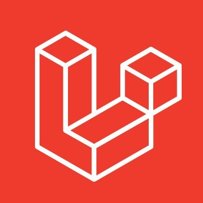

Laravel — безкоштовний, з відкритим кодом PHP-фреймворк, створений Тейлор Отвел (англ. Taylor Otwell)
і призначений для розробки веб-додатків відповідно до шаблону model–view–controller (MVC).
Серед особливостей Laravel можна назвати: модульну систему упакування з виділеним менеджером залежностей Composer,
різні способи для доступу до реляційних баз даних, утиліти, які допомагають в розгортанні додатків і технічного обслуговування,
а також його орієнтація на синтаксичний цукор.
